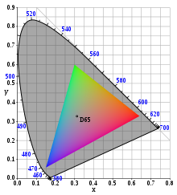

每个色彩空间都是多个设计决策的集合，这些设计决策一起选择来支持 大范围的颜色，同时满足与精度和显示相关的技术限制 技术。创建 3D 资产或将 3D 资产组装到场景中时， 了解这些属性是什么以及一种色彩空间的属性如何相互关联非常重要 到场景中的其他色彩空间。

考虑两个非常常见的色彩空间：“SRGBColorSpace”（“sRGB”）和 `LinearSRGBColorSpace`（“线性 sRGB”）。两者都使用相同的原色和白点， 因此具有相同的色域。两者都使用 RGB 颜色模型。它们的区别仅在于 传递函数 — Linear-sRGB 与物理光强度呈线性关系。 sRGB 使用非线性 sRGB 传递函数，更类似于 人眼感知光和普通显示设备的响应能力。
这种差异很重要。光照计算和其他渲染操作必须 通常发生在线性色彩空间中。然而，线性颜色的效率较低 存储在图像或帧缓冲区中，并且当人类观察者查看时看起来不正确。 因此，输入纹理和最终渲染图像通常会使用非线性 sRGB 色彩空间。
ℹ️ 注意：虽然一些现代显示器支持更宽的色域，例如 Display-P3， Web 平台的图形 API 很大程度上依赖于 sRGB。使用 Three.js 的应用程序 今天通常仅使用 sRGB 和 Linear-sRGB 色彩空间。
现代渲染方法所需的线性工作流程通常涉及多个 一个颜色空间，每个颜色空间分配给一个特定的角色。线性和非线性色彩空间是 适用于不同的角色，如下所述。
提供给 Three.js 的颜色 — 来自颜色选择器、纹理、3D 模型和其他来源 — 每个都有一个关联的色彩空间。尚未采用 Linear-sRGB 工作颜色的颜色 必须转换空间，并为纹理指定正确的texture.colorSpace 分配。 如果满足以下条件，可以自动进行某些转换（对于 sRGB 中的十六进制和 CSS 颜色）： 在初始化颜色之前启用 THREE.ColorManagement API：
THREE.ColorManagement.enabled = true;
three.js 颜色管理默认启用。
⚠️ 警告：许多 3D 模型格式不正确或不一致 定义色彩空间信息。虽然 Three.js 尝试处理大多数情况，但存在问题 在较旧的文件格式中很常见。为了获得最佳结果，请使用 glTF 2.0 (`GLTFLoader`) 并尽早在在线查看器中测试 3D 模型，以确认资产本身是正确的。
渲染、插值和许多其他操作必须在开放域中执行 线性工作色彩空间，其中 RGB 分量与物理量成正比 照明。在 Three.js 中，工作色彩空间是 Linear-sRGB。
输出到显示设备、图像或视频可能涉及从开放域进行转换 Linear-sRGB 工作色彩空间到另一个色彩空间。转换定义为 (`WebGLRenderer.outputColorSpace`)。当使用后处理时，这需要OutputPass。
⚠️ 警告：渲染目标可以使用 sRGB 或 Linear-sRGB。 sRGB 使 更好地利用有限的精度。在封闭域中，8 位通常足以满足 sRGB 而 Linear-sRGB 可能需要 ≥12 位（半浮点）。如果以后管道 阶段需要 Linear-sRGB 输入，额外的转换可能有一个小的 性能成本。
基于“ShaderMaterial”和“RawShaderMaterial”的自定义材质必须实现自己的输出颜色空间转换。 对于“ShaderMaterial”实例，将“colorspace_fragment”着色器块添加到片段着色器的“main()”函数就足够了。
读取或修改“Color”实例的方法假设数据已经在 Three.js 工作色彩空间，Linear-sRGB。 RGB 和 HSL 分量是直接的 Color 实例存储的数据表示形式，并且永远不会转换 隐含地。可以使用 .convertLinearToSRGB() 显式转换颜色数据 或.convertSRGBToLinear()。
// RGB components (no change). color.r = color.g = color.b = 0.5; console.log( color.r ); // → 0.5 // Manual conversion. color.r = 0.5; color.convertSRGBToLinear(); console.log( color.r ); // → 0.214041140
设置ColorManagement.enabled = true（推荐）时，某些转化 是自动制作的。因为十六进制和CSS颜色一般都是sRGB，`Color` 方法会在设置器中自动将这些输入从 sRGB 转换为 Linear-sRGB，或者 当从 getter 返回十六进制或 CSS 输出时，从 Linear-sRGB 转换为 sRGB。
// Hexadecimal conversion. color.setHex( 0x808080 ); console.log( color.r ); // → 0.214041140 console.log( color.getHex() ); // → 0x808080 // CSS conversion. color.setStyle( 'rgb( 0.5, 0.5, 0.5 )' ); console.log( color.r ); // → 0.214041140 // Override conversion with 'colorSpace' argument. color.setHex( 0x808080, LinearSRGBColorSpace ); console.log( color.r ); // → 0.5 console.log( color.getHex( LinearSRGBColorSpace ) ); // → 0x808080 console.log( color.getHex( SRGBColorSpace ) ); // → 0xBCBCBC
当单个颜色或纹理配置错误时，它会显得比颜色或纹理更暗或更亮 预计。当渲染器的输出色彩空间配置错误时，整个场景可能会出现 较暗（例如，缺少转换为 sRGB）或较亮（例如，使用 双重转换为 sRGB） 后处理）。在每种情况下，问题可能不统一，只是增加/减少 照明并不能解决这个问题。
当输入颜色空间和输出颜色两者时，会出现一个更微妙的问题 空间不正确 - 整体亮度水平可能很好，但颜色可能会改变 在不同的照明下会意外出现，或者阴影可能显得更加过度且不太柔和 比预期的。这两个错误并不能构成正确，重要的是工作 色彩空间是线性的（“场景参考”）并且输出色彩空间是非线性的 （“显示引用”）。